Calculation of diversification indicators and other covariates
Summary
Indicators
| Indicator | Data | Format |
|---|---|---|
| perimeter and area of the field | RPG* | vectoriel |
| mean field size within buffer | RPG* | vectoriel |
| crop rotation (N-4:N) | RPG* | vectoriel |
| hedgerows around field | RPG* Liu 2023 |
vectoriel raster 30m |
| % land cover within buffer | RPG* + CLCplus | raster 10m |
| edge density | Not available | NA |
Datasets
Registre Parcellaire Graphique (RPG): annual field crop data for the period 2015-2024 available for France on IGN website: https://cartes.gouv.fr/rechercher-une-donnee/dataset/IGNF_RPG. The dataset differentiates 366 crop categories
Geodienste - nutzungsflaechen (Nutzung): Swiss equivalent of the RPG, not entirely open yet but raw data provided by Selma Cadot: https://geodienste.ch/services/lwb_nutzungsflaechen. The dataset differentiates 146 crop categories. It also contains hedgerows and semi-natural.
Corine Land Cover plus (CLCplus): land cover at European scale with 10m resolution and 11 basic land cover classes, available on Corine Land Monitoring Service https://land.copernicus.eu/en/products/clc-backbone.
Liu et al. (2023): European tree cover and biomass map at 30m resolution for Europe https://zenodo.org/records/8154445 derived from 3m resolution PlanetScope imagery of 2019.
BD Haies v2 (6.8Gb): hedgerows dataset for France available on the IGN website: https://geoservices.ign.fr/bdhaie. BD Haie v2 was produced from satellite images of 2020-2022.
Land cover class harmonization: list all classes from
RPG,NutzungandCLCplusand how to categorize them. This file has been completed during WS3 and can be further customized for the project objectives.Orchards and vineyards from individual projects to further complete the agricultural land use.
Field observations
| 2014 | 2015 | 2016 | 2017 | 2018 | 2019 | 2020 | 2021 | 2022 | 2023 | 2024 | 2025 | TOTAL | |
|---|---|---|---|---|---|---|---|---|---|---|---|---|---|
| Agrim2019 | 0 | 0 | 0 | 0 | 0 | 40 | 0 | 0 | 0 | 0 | 0 | 0 | 40 |
| BACCHUS_OPERA | 0 | 0 | 0 | 0 | 40 | 38 | 40 | 40 | 38 | 38 | 38 | 0 | 272 |
| BIOMHE | 0 | 0 | 0 | 0 | 0 | 0 | 40 | 0 | 0 | 0 | 0 | 0 | 40 |
| BISCO | 0 | 0 | 0 | 27 | 0 | 0 | 0 | 0 | 0 | 0 | 0 | 0 | 27 |
| DIVAG | 0 | 0 | 0 | 0 | 0 | 40 | 0 | 0 | 0 | 0 | 0 | 0 | 40 |
| DURUM_MIX_GM | 0 | 0 | 0 | 0 | 226 | 0 | 0 | 0 | 0 | 0 | 0 | 0 | 226 |
| EXCLU_BVD | 0 | 0 | 0 | 0 | 0 | 0 | 0 | 7 | 12 | 16 | 0 | 0 | 35 |
| FRAMEwork_BVD | 0 | 0 | 0 | 0 | 0 | 0 | 0 | 36 | 0 | 0 | 0 | 0 | 36 |
| Herrera2026 | 0 | 0 | 0 | 0 | 0 | 0 | 30 | 35 | 40 | 0 | 0 | 0 | 105 |
| lepibats | 0 | 0 | 0 | 0 | 0 | 0 | 0 | 33 | 0 | 0 | 0 | 0 | 33 |
| muesli | 0 | 0 | 29 | 0 | 0 | 0 | 0 | 0 | 0 | 0 | 0 | 0 | 29 |
| OSCAR | 0 | 0 | 0 | 0 | 21 | 44 | 50 | 80 | 100 | 102 | 115 | 0 | 512 |
| PestiRed | 0 | 0 | 0 | 0 | 0 | 0 | 62 | 60 | 54 | 60 | 58 | 58 | 352 |
| Pigot2023 | 0 | 0 | 0 | 0 | 0 | 0 | 0 | 156 | 144 | 0 | 0 | 0 | 300 |
| SEBIOPAG_BVD | 0 | 0 | 0 | 0 | 0 | 0 | 20 | 21 | 20 | 0 | 0 | 0 | 61 |
| SEBIOPAG_Plaine de Dijon | 20 | 20 | 20 | 20 | 20 | 20 | 20 | 20 | 20 | 20 | 20 | 0 | 220 |
| SEBIOPAG_VcG | 20 | 19 | 17 | 17 | 17 | 17 | 17 | 17 | 17 | 17 | 0 | 0 | 175 |
| SEBIOPAG_ZAAr | 0 | 0 | 0 | 0 | 20 | 0 | 0 | 17 | 0 | 16 | 0 | 0 | 53 |
| Seree2022 | 0 | 0 | 0 | 0 | 0 | 14 | 19 | 0 | 0 | 0 | 0 | 0 | 33 |
| SERIPAGE | 0 | 0 | 9 | 0 | 0 | 0 | 0 | 0 | 0 | 0 | 0 | 0 | 9 |
| TOTAL | 40 | 39 | 75 | 64 | 344 | 213 | 298 | 522 | 445 | 269 | 231 | 58 | 2598 |
More detailled overview of the field observations can be found here
Identification of the crop field
Because of data availability, we will only focus on the observations made in the period 2015-2024 with field coordinates. The project DURUM_MIX_GM has only one coordinates leading to the entrance of the Institut Agro-Montpellier, without registered crop field within 1500m from the coordinates so it was also excluded.
We identified the crop field from RPG or Nutzung dataset corresponding to the observations based on the coordinates and the year of the sampling.
| Nobs | in_RPG | in_VineOrchard | Perc | |
|---|---|---|---|---|
| Agrim2019 | 40 | 40 | 0 | 100.00 |
| BACCHUS_OPERA | 272 | 1 | 268 | 98.90 |
| BIOMHE | 40 | 39 | 0 | 97.50 |
| BISCO | 27 | 26 | 0 | 96.30 |
| DIVAG | 40 | 40 | 0 | 100.00 |
| EXCLU_BVD | 35 | 0 | 35 | 100.00 |
| FRAMEwork_BVD | 36 | 0 | 36 | 100.00 |
| Herrera2026 | 105 | 94 | 0 | 89.52 |
| lepibats | 33 | 30 | 0 | 90.91 |
| muesli | 29 | 29 | 0 | 100.00 |
| OSCAR | 512 | 448 | 11 | 89.65 |
| PestiRed | 294 | 267 | 0 | 90.82 |
| Pigot2023 | 300 | 299 | 0 | 99.67 |
| SEBIOPAG_BVD | 61 | 0 | 61 | 100.00 |
| SEBIOPAG_Plaine de Dijon | 200 | 200 | 0 | 100.00 |
| SEBIOPAG_VcG | 155 | 152 | 0 | 98.06 |
| SEBIOPAG_ZAAr | 53 | 53 | 0 | 100.00 |
| Seree2022 | 33 | 30 | 0 | 90.91 |
| SERIPAGE | 9 | 9 | 0 | 100.00 |
Remarks:
- In total,
95% of the fields observations are covered with information on crop field.
- It is important to know and acknowledge that
RPGis incomplete but the vineyards and orchards provided by data providers helps characterizing projects with permanent crops.
Field size
We calculated the area and the perimeter of the crop fields corresponding to the samplings.
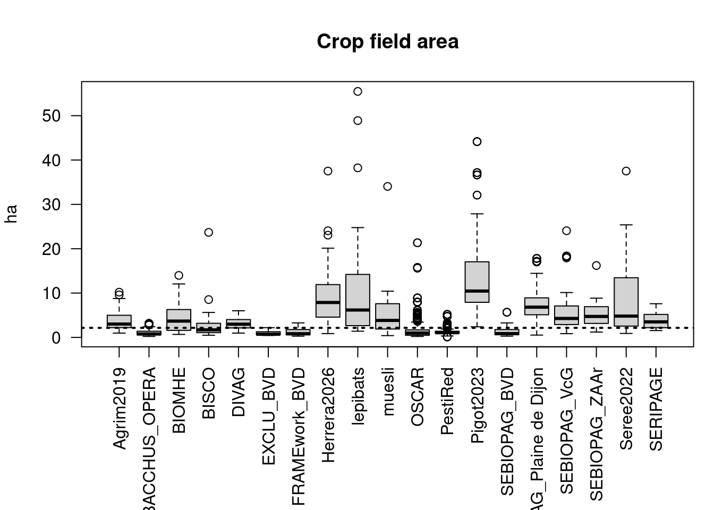
| Min. | 1st Qu. | Median | Mean | 3rd Qu. | Max. | |
|---|---|---|---|---|---|---|
| Agrim2019 | 0.97 | 2.21 | 3.02 | 3.80 | 4.99 | 10.21 |
| BACCHUS_OPERA | 0.23 | 0.58 | 0.78 | 1.07 | 1.40 | 3.15 |
| BIOMHE | 0.68 | 1.59 | 3.69 | 4.48 | 6.29 | 13.99 |
| BISCO | 0.50 | 1.10 | 1.71 | 3.22 | 3.15 | 23.69 |
| DIVAG | 0.97 | 2.21 | 2.98 | 3.17 | 4.02 | 6.01 |
| EXCLU_BVD | 0.45 | 0.58 | 0.72 | 0.94 | 1.29 | 2.20 |
| FRAMEwork_BVD | 0.29 | 0.58 | 0.84 | 1.25 | 1.77 | 3.28 |
| Herrera2026 | 0.87 | 4.58 | 7.88 | 8.76 | 11.91 | 37.52 |
| lepibats | 1.40 | 2.77 | 6.18 | 11.89 | 13.96 | 55.47 |
| muesli | 0.41 | 1.90 | 3.84 | 5.46 | 7.61 | 34.05 |
| OSCAR | 0.22 | 0.48 | 1.00 | 1.71 | 1.70 | 21.35 |
| PestiRed | 0.10 | 0.97 | 1.06 | 1.33 | 1.40 | 5.19 |
| Pigot2023 | 2.40 | 7.93 | 10.46 | 12.87 | 17.05 | 44.15 |
| SEBIOPAG_BVD | 0.29 | 0.60 | 0.87 | 1.37 | 1.77 | 5.68 |
| SEBIOPAG_Plaine de Dijon | 0.53 | 5.11 | 6.83 | 7.46 | 8.92 | 17.82 |
| SEBIOPAG_VcG | 0.85 | 2.90 | 4.27 | 5.56 | 7.00 | 24.06 |
| SEBIOPAG_ZAAr | 1.21 | 3.16 | 4.73 | 4.96 | 6.94 | 16.22 |
| Seree2022 | 0.90 | 2.60 | 4.81 | 9.17 | 12.85 | 37.52 |
| SERIPAGE | 1.55 | 2.19 | 3.51 | 4.04 | 5.19 | 7.60 |
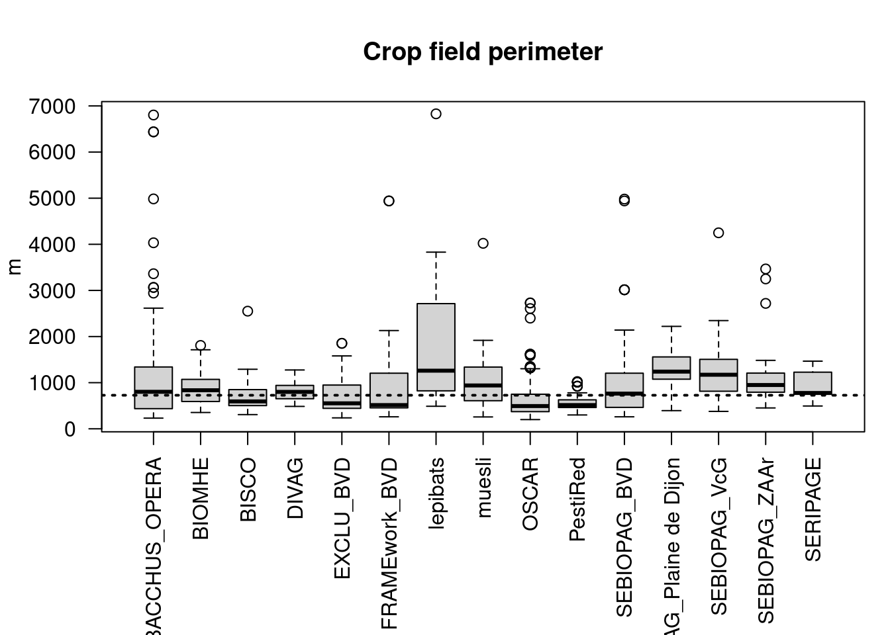
| Min. | 1st Qu. | Median | Mean | 3rd Qu. | Max. | |
|---|---|---|---|---|---|---|
| Agrim2019 | 485.39 | 691.18 | 797.06 | 889.45 | 1053.13 | 1674.45 |
| BACCHUS_OPERA | 214.18 | 330.40 | 398.22 | 449.45 | 552.24 | 1157.85 |
| BIOMHE | 354.03 | 592.12 | 835.73 | 907.71 | 1072.08 | 1807.17 |
| BISCO | 307.54 | 503.97 | 593.59 | 743.08 | 846.90 | 2550.45 |
| DIVAG | 485.39 | 654.90 | 799.78 | 816.22 | 937.89 | 1275.08 |
| EXCLU_BVD | 269.15 | 324.13 | 459.31 | 452.72 | 550.25 | 669.28 |
| FRAMEwork_BVD | 247.58 | 445.90 | 509.95 | 523.05 | 602.94 | 938.87 |
| Herrera2026 | 527.24 | 1056.08 | 1423.60 | 1450.42 | 1727.66 | 5991.28 |
| lepibats | 488.44 | 824.10 | 1260.50 | 1789.15 | 2670.28 | 6828.99 |
| muesli | 257.24 | 608.61 | 939.47 | 1060.52 | 1338.17 | 4021.15 |
| OSCAR | 200.02 | 358.30 | 493.46 | 583.72 | 749.38 | 2728.54 |
| PestiRed | 299.90 | 454.28 | 513.51 | 550.32 | 607.61 | 1126.50 |
| Pigot2023 | 707.30 | 1381.42 | 1616.08 | 1735.90 | 2089.44 | 4574.97 |
| SEBIOPAG_BVD | 247.58 | 366.24 | 500.45 | 525.22 | 643.19 | 984.37 |
| SEBIOPAG_Plaine de Dijon | 393.53 | 1075.19 | 1240.09 | 1297.87 | 1558.72 | 2220.91 |
| SEBIOPAG_VcG | 377.85 | 815.28 | 1171.63 | 1202.13 | 1505.30 | 4249.39 |
| SEBIOPAG_ZAAr | 451.97 | 793.52 | 949.02 | 1061.93 | 1207.41 | 3466.03 |
| Seree2022 | 378.99 | 778.39 | 1272.30 | 1482.71 | 2076.89 | 5991.28 |
| SERIPAGE | 494.30 | 750.53 | 776.57 | 928.22 | 1227.43 | 1466.38 |
There is a strong relation between area and perimeter (Figure 5). In median, field size is 2.2 ha and field perimeter is 710m.
Outliers
Remarks:
Field size within buffer
Using the coordinates of the sampling sites, we calculated the average area of all crop fields within a buffer (500m, and 1000m).
| B_500m | B_1000m | |
|---|---|---|
| Min. | 0.14 | 0.16 |
| 1st Qu. | 0.74 | 0.72 |
| Median | 1.32 | 1.22 |
| Mean | 2.42 | 1.99 |
| 3rd Qu. | 2.95 | 2.40 |
| Max. | 21.98 | 16.35 |
| NA’s | 2.00 | 1.00 |
We see that some observations don’t have crop field within 500m (N=2). These observations (listed in Table 6) would need to be checked and ensure that they are close to agricultural lands.
| Study_ID | Plot_ID | Year | |
|---|---|---|---|
| 181 | OSCAR | 33_2011_00002 | 2018 |
| 481 | OSCAR | 11_2023_00004 | 2023 |
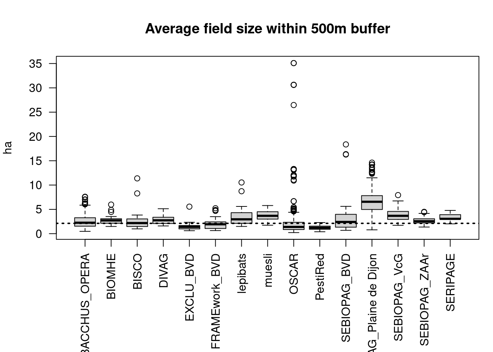
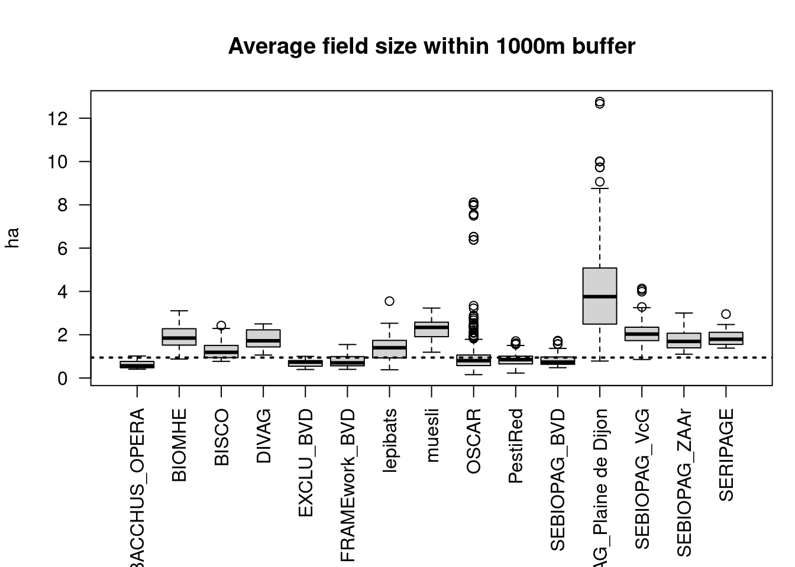
Outliers
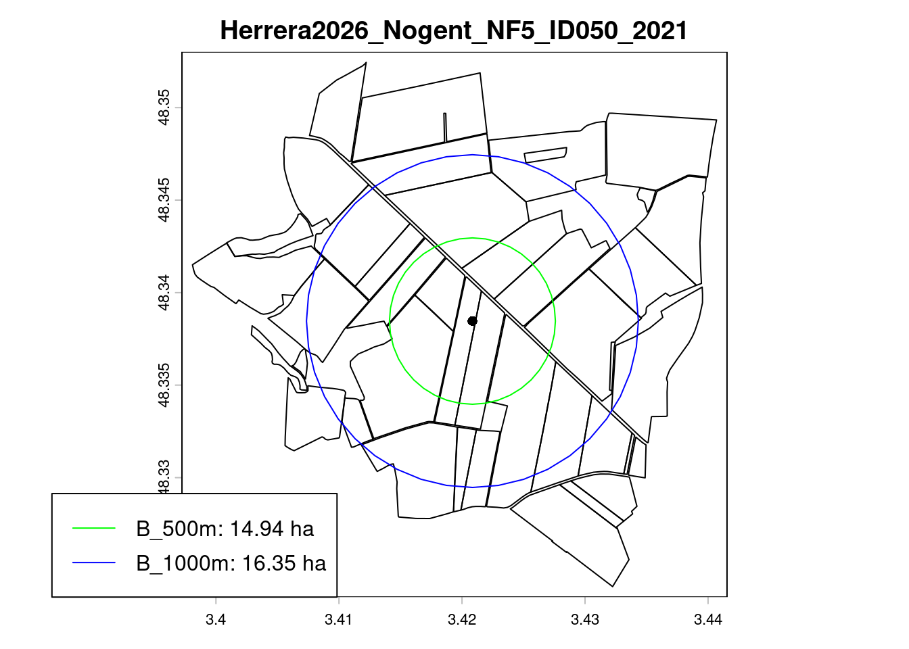
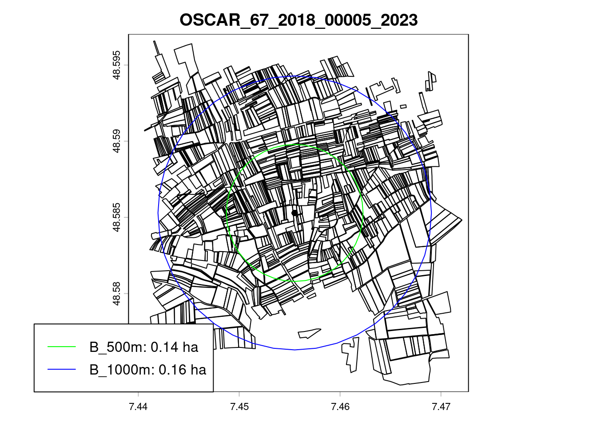
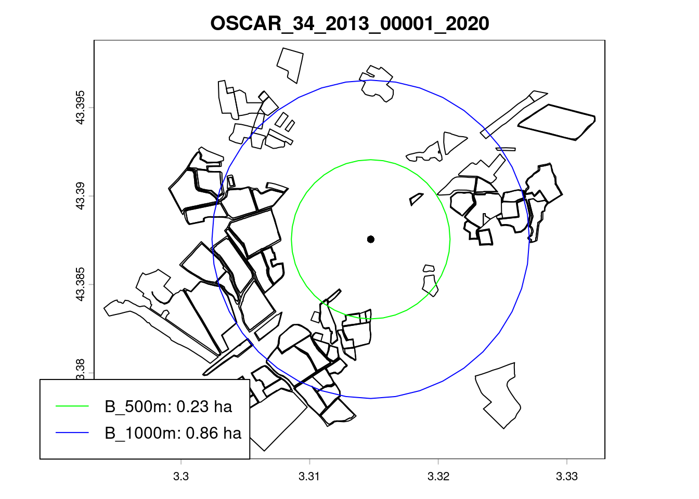
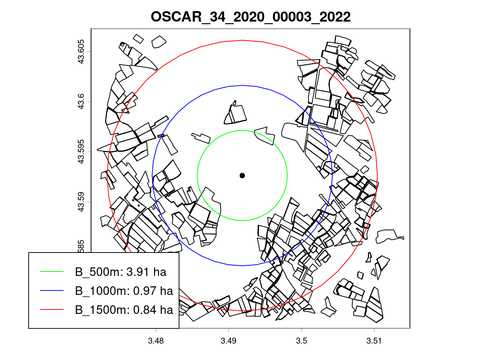
Crop rotation (N-4:N)
| 0 | 1 | 2 | 3 | 4 | 5 | |
|---|---|---|---|---|---|---|
| Agrim2019 | 0 | 0 | 0 | 0 | 1 | 39 |
| BACCHUS_OPERA | 1 | 0 | 0 | 1 | 2 | 268 |
| BIOMHE | 1 | 0 | 1 | 0 | 0 | 38 |
| BISCO | 1 | 0 | 0 | 26 | 0 | 0 |
| DIVAG | 0 | 0 | 0 | 0 | 0 | 40 |
| EXCLU_BVD | 0 | 0 | 0 | 0 | 0 | 35 |
| FRAMEwork_BVD | 0 | 0 | 0 | 0 | 0 | 36 |
| Herrera2026 | 9 | 0 | 0 | 0 | 2 | 94 |
| lepibats | 2 | 1 | 4 | 0 | 3 | 23 |
| muesli | 0 | 0 | 29 | 0 | 0 | 0 |
| OSCAR | 34 | 1 | 26 | 36 | 79 | 336 |
| PestiRed | 1 | 2 | 3 | 29 | 126 | 133 |
| Pigot2023 | 1 | 0 | 0 | 0 | 0 | 299 |
| SEBIOPAG_BVD | 0 | 0 | 0 | 0 | 0 | 61 |
| SEBIOPAG_Plaine de Dijon | 0 | 20 | 20 | 20 | 20 | 120 |
| SEBIOPAG_VcG | 1 | 18 | 17 | 17 | 19 | 83 |
| SEBIOPAG_ZAAr | 0 | 0 | 0 | 0 | 20 | 33 |
| Seree2022 | 3 | 0 | 0 | 0 | 0 | 30 |
| SERIPAGE | 0 | 0 | 9 | 0 | 0 | 0 |
The number of observations in the period N-4:N in Table 7 is a results of the number of observations per year (Table 1). Most observations have 5 years of data on crop rotation (73%, N=1668).
Let’s have a look at the crop rotations over the 5-year period (N:N-4).
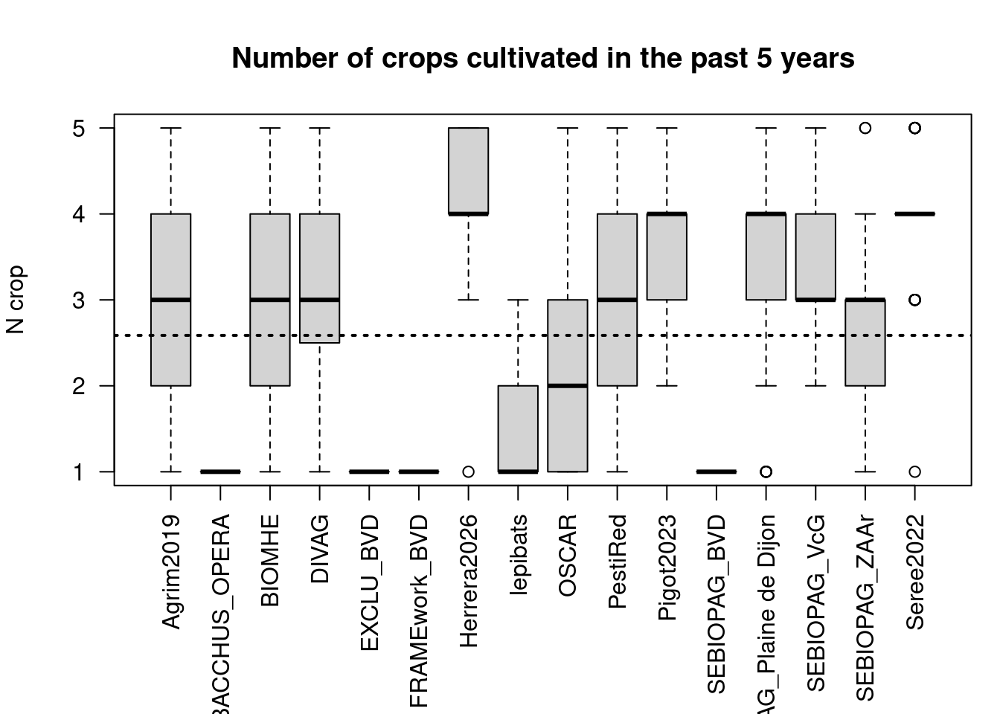
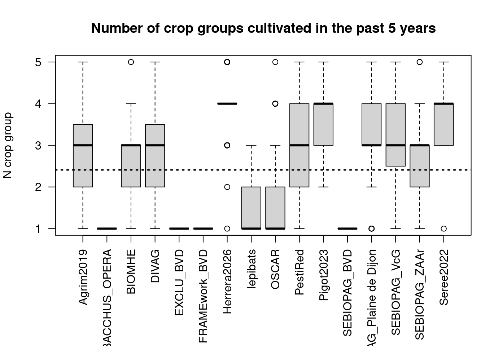
From 1668 observations with complete crop rotation information in [N-4:N], 535 have the same crop for the whole time period, while 393 fields have four different crop groups in the past 5 years (Figure 16).
| Var1 | Freq |
|---|---|
| vignes | 488 |
| vergers | 132 |
| ble_tendre_hiver,colza_hiver,orge_hiver | 75 |
| divers,vignes | 26 |
| gel_sans_prod,vignes | 24 |
| ble_tendre_hiver,prairies_temporaires | 17 |
| ble_tendre_hiver,colza_hiver,proteagineux | 16 |
| ble_tendre_hiver,mais_ensilage | 14 |
| ble_tendre_hiver,colza_hiver,orge_hiver,proteagineux | 13 |
| ble_tendre_hiver,colza_hiver,lin_non_textile,proteagineux | 12 |
| ble_tendre_hiver,colza_hiver,orge_printemps,proteagineux | 12 |
| autres_cult_indus,ble_tendre_hiver,orge_hiver | 11 |
| ble_tendre_hiver,mais_grain_semence | 10 |
| mais_grain_semence,vignes | 10 |
| ble_dur_hiver,ble_tendre_hiver,colza_hiver,orge_printemps | 8 |
| ble_tendre_hiver,colza_hiver,mais_ensilage,orge_hiver | 8 |
| autres_cult_indus,ble_tendre_hiver,mais_grain_semence,orge_hiver | 7 |
| ble_dur_hiver,ble_tendre_hiver,tournesol | 7 |
| ble_tendre_hiver,colza_hiver,fourrage_fabacees | 7 |
| ble_tendre_hiver,colza_hiver,mais_grain_semence,proteagineux | 7 |
Remarks:
- Crop rotations depends a lot on the project targeting either annual vs perrenial cropping systems.
Hedgerows length
We overlaid the field as defined in RPG* (+ a 10m buffer) with the tree cover density from Liu et al. 2023 and with other national information on hedgerows (BDHaie and Nutzung).
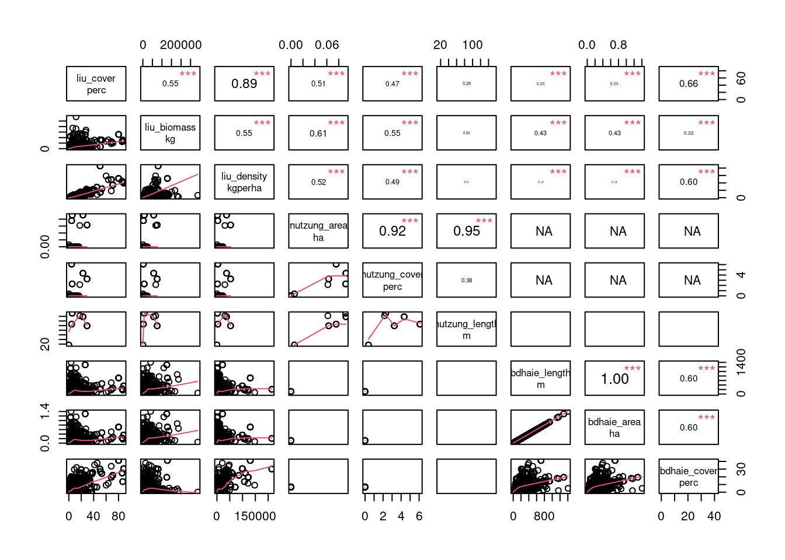
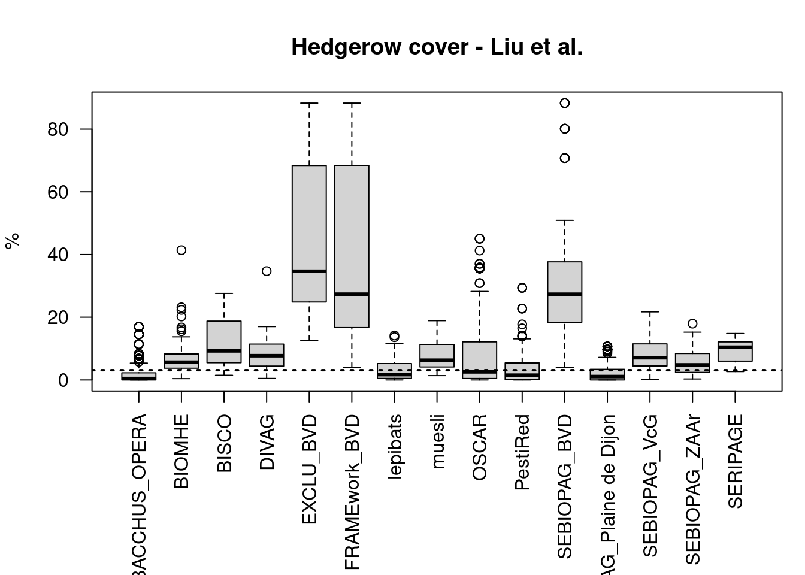
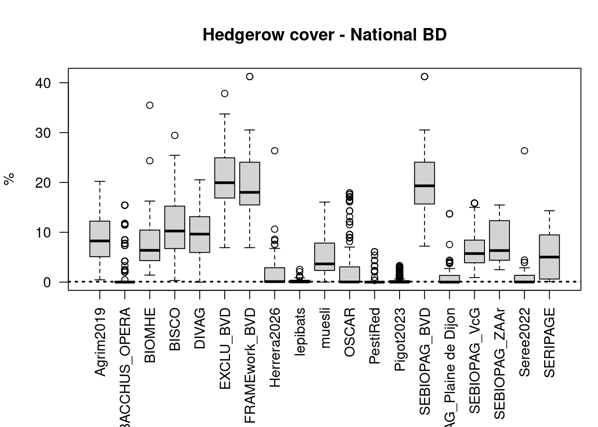
| Liu | National | |
|---|---|---|
| Agrim2019 | 100.00 | 100.00 |
| BACCHUS_OPERA | 40.07 | 26.10 |
| BIOMHE | 92.50 | 97.50 |
| BISCO | 96.30 | 96.30 |
| DIVAG | 92.50 | 95.00 |
| EXCLU_BVD | 100.00 | 100.00 |
| FRAMEwork_BVD | 100.00 | 100.00 |
| Herrera2026 | 51.43 | 49.52 |
| lepibats | 54.55 | 48.48 |
| muesli | 100.00 | 96.55 |
| OSCAR | 58.01 | 47.07 |
| PestiRed | 48.64 | 8.16 |
| Pigot2023 | 29.00 | 38.00 |
| SEBIOPAG_BVD | 100.00 | 100.00 |
| SEBIOPAG_Plaine de Dijon | 54.50 | 39.50 |
| SEBIOPAG_VcG | 89.03 | 98.06 |
| SEBIOPAG_ZAAr | 94.34 | 100.00 |
| Seree2022 | 24.24 | 45.45 |
| SERIPAGE | 100.00 | 100.00 |
Outliers
Land cover within buffer
| n_classes | av_perc_rpg | |
|---|---|---|
| Agrim2019 | 36 | 86.97 |
| BACCHUS_OPERA | 32 | 80.12 |
| BIOMHE | 40 | 83.17 |
| BISCO | 30 | 84.17 |
| DIVAG | 38 | 85.93 |
| EXCLU_BVD | 39 | 78.54 |
| FRAMEwork_BVD | 38 | 76.71 |
| Herrera2026 | 51 | 84.21 |
| lepibats | 36 | 71.63 |
| muesli | 36 | 82.44 |
| OSCAR | 51 | 76.44 |
| PestiRed | 40 | 67.67 |
| Pigot2023 | 47 | 85.27 |
| SEBIOPAG_BVD | 42 | 80.80 |
| SEBIOPAG_Plaine de Dijon | 44 | 75.77 |
| SEBIOPAG_VcG | 44 | 83.94 |
| SEBIOPAG_ZAAr | 45 | 85.57 |
| Seree2022 | 42 | 83.82 |
| SERIPAGE | 28 | 87.14 |
After grouping, there are 54 different categories covered by the 1000m buffers (Table 10).
In average, roughly 70% of the buffer areas are filled with land cover classes from RPG (and the other half are CLC classes). The proportion of RPG classes vary greatly by project.
frac1000_forest frac1000_vignes
15.36 15.25
frac1000_ble_tendre_hiver frac1000_permanent.herbaceous
10.63 9.45
frac1000_prairies_permanentes frac1000_sealed
5.51 5.36
frac1000_colza_hiver frac1000_prairies_temporaires
3.45 3.40
frac1000_low.growing.woody.plants frac1000_orge_hiver
3.33 3.12 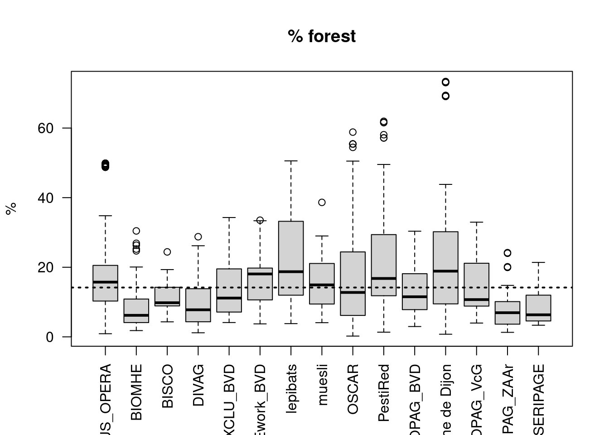
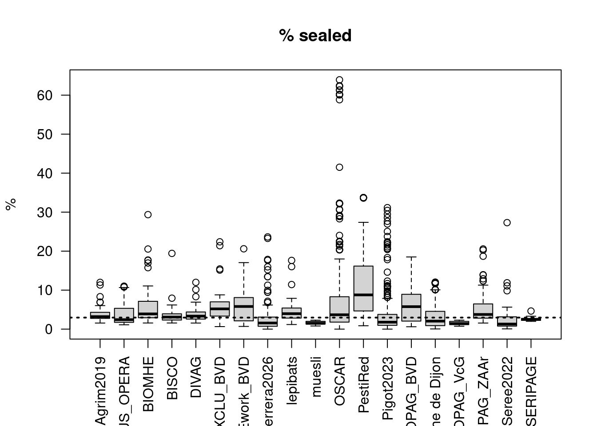
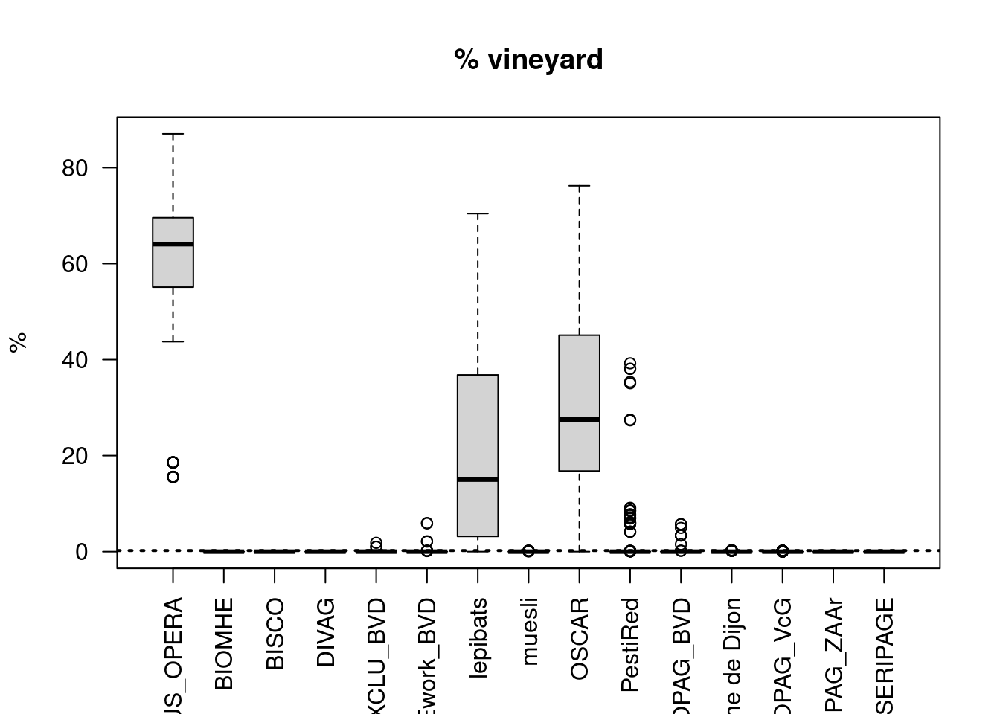
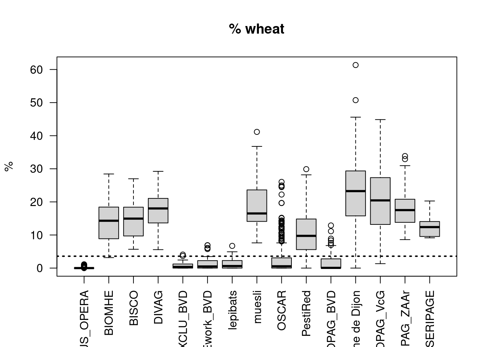
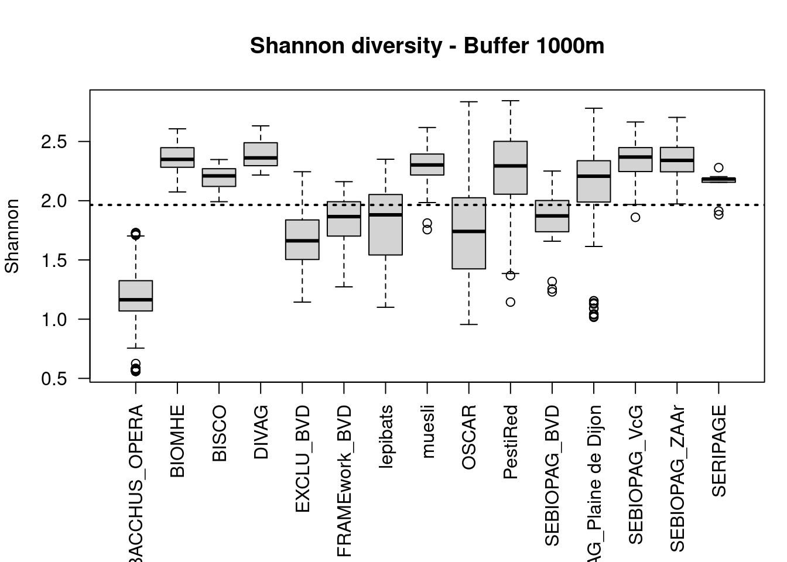
| Min. | 1st Qu. | Median | Mean | 3rd Qu. | Max. | |
|---|---|---|---|---|---|---|
| Agrim2019 | 2.02 | 2.27 | 2.33 | 2.34 | 2.41 | 2.63 |
| BACCHUS_OPERA | 0.56 | 1.07 | 1.16 | 1.15 | 1.32 | 1.73 |
| BIOMHE | 2.07 | 2.28 | 2.35 | 2.35 | 2.44 | 2.61 |
| BISCO | 1.99 | 2.12 | 2.21 | 2.19 | 2.27 | 2.35 |
| DIVAG | 2.22 | 2.30 | 2.36 | 2.39 | 2.48 | 2.63 |
| EXCLU_BVD | 1.14 | 1.50 | 1.66 | 1.69 | 1.84 | 2.24 |
| FRAMEwork_BVD | 1.27 | 1.70 | 1.87 | 1.84 | 1.99 | 2.16 |
| Herrera2026 | 1.25 | 2.09 | 2.32 | 2.28 | 2.49 | 2.83 |
| lepibats | 1.10 | 1.54 | 1.88 | 1.78 | 2.05 | 2.35 |
| muesli | 1.76 | 2.22 | 2.30 | 2.27 | 2.39 | 2.62 |
| OSCAR | 0.96 | 1.42 | 1.74 | 1.75 | 2.02 | 2.84 |
| PestiRed | 1.14 | 2.05 | 2.29 | 2.23 | 2.51 | 2.84 |
| Pigot2023 | 1.29 | 1.98 | 2.09 | 2.14 | 2.30 | 2.85 |
| SEBIOPAG_BVD | 1.23 | 1.74 | 1.87 | 1.87 | 2.00 | 2.25 |
| SEBIOPAG_Plaine de Dijon | 1.02 | 1.99 | 2.21 | 2.13 | 2.34 | 2.78 |
| SEBIOPAG_VcG | 1.86 | 2.25 | 2.37 | 2.35 | 2.45 | 2.66 |
| SEBIOPAG_ZAAr | 1.97 | 2.24 | 2.34 | 2.34 | 2.45 | 2.70 |
| Seree2022 | 1.73 | 1.96 | 2.14 | 2.17 | 2.33 | 2.71 |
| SERIPAGE | 1.88 | 2.16 | 2.18 | 2.13 | 2.19 | 2.28 |
Remarks:
- All buffers include some amount of forest (5-20%) and sealed area (5-10%), while the crop composition is highly project specific.
Summary and questions about metrics
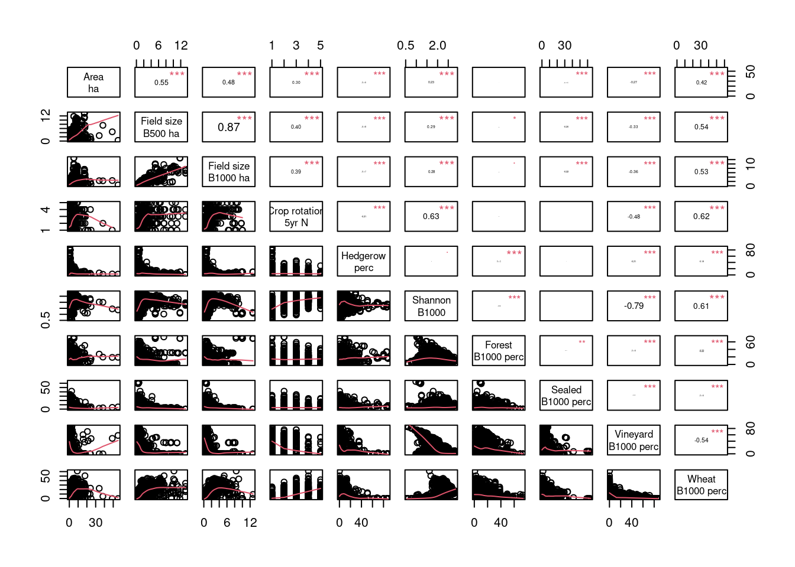
Remarks:
Most observations have a corresponding crop field in RPG dataset or in complementary dataset (Table 2).
The sampling location within the field might influence the results (different impact of hedgerows, or of agricultural practices). We might want to add an indicator reflecting the distance to the center of the field and/or the distance to the closest field boundary?